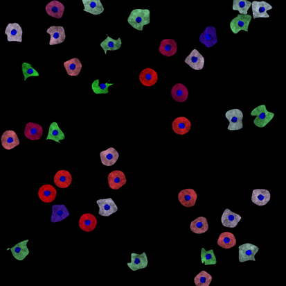

Broad Bioimage Benchmark Collection
Annotated biological image sets for testing and validation
Simulated 24-well plate with synthetic cells
Accession number BBBC031 · Version 1
Example images
-

-

Description of the biological application
We generated a synthetic HCS dataset simulating drugs perturbing the cell shape and the expressions of proteins (here represented by different colours). The dataset is useful for testing classification and regression algorithms.
Images
The images were generated using a customized version of SIMCEP [Lehmussola et al. (2007)]. We simulated a synthetic 24-well plate modeling 6 continuous biological processes plus one process with cells uniformly distributed between the possible states (Fig. 2a). The dataset is composed of 9 images/well, for a total of 216 images and 8640 cells. To model the continuous processes we fixed two endpoints, one with with irregular shaped cells in green, and the other rounded cells in red. Then, we imposed for each process a middle point with colour ranging from white (process 1) to blue (process 6). The colour of the cells in each process is then defined by linearly interpolating between the colour of the middle point and one of the two endpoints. The degree of deformation of the cell's shape decreases from the green to the red endpoint (Fig. 2b).
Original image size is 950x950 pixels. Images are available in 8-bit RGB png format. Binary masks of nuclei and cells are also provided.
BBBC031_v1_dataset.zip (56.3MB)
Ground truth CB
We provide a csv file containing the information of all the generated cells:
- Image name
- Cell ID
- Location of the cell centroid
- RGB cell colour
- Cell shape parameter (see [Lehmussola et al. (2007)])
- Process ID (from 1 to 7, see Fig. 2)
- Position of the cells on the phenotypic plane
BBBC031DatasetGroundTruth.csv (872 KB)
For more information
These images were generated by the Peter Horvath's lab at Biological Research Center (BRC), Szeged, Hungary. Please contact Peter Horvath for more information.
Published results using this image set
The proposed data set will be evaluated in a publication to be submitted.
Recommended citation
"We used image set BBBC031v1 [Szkalisity et al. 2017], available from the Broad Bioimage Benchmark Collection [Ljosa et al., Nature Methods, 2012]."
References
[Lehmussola et al. (2007)] Lehmussola, A., Ruusuvuori, P., Selinummi, J., Huttunen, H., & Yli-Harja, O. (2007). Computational framework for simulating fluorescence microscope images with cell populations. IEEE Transactions on Medical Imaging, 26(7), 1010-1016.
Copyright
The BBBC031v1 image set are licensed under a Creative Commons Attribution 3.0 Unported License by Peter Horvath and Abel Szkalisity.